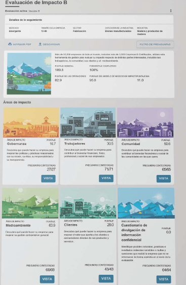
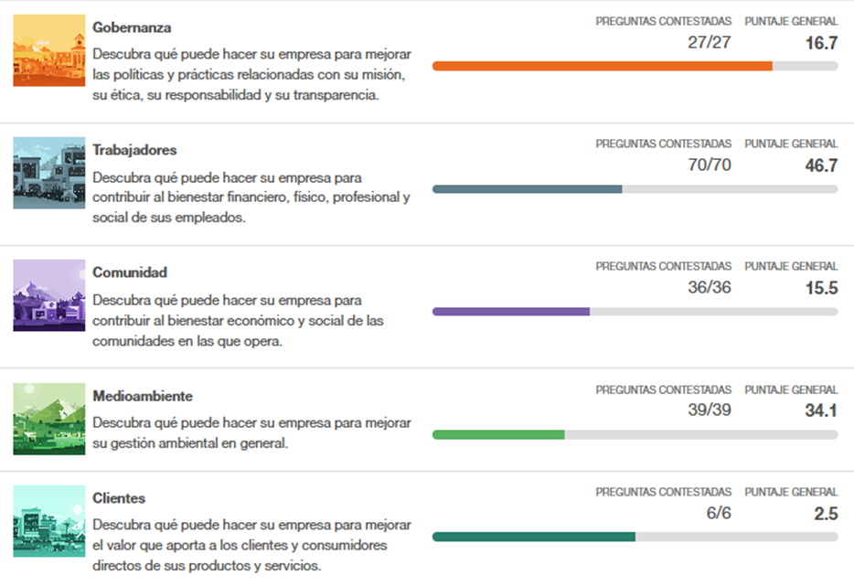

Dimensión
Ambiental
Puntaje
48.9
Descubre qué puede hacer tu empresa para mejorar su gestión ambiental.
Preguntas contestadas
9/10
A la izquierda, tus capturas. A la derecha, la pantalla de resultados del diagnóstico de SustentaESG con el mismo estilo. Más abajo, la vista de escritorio. Los datos son de una empresa de ejemplo, no resultados reales.
Tu referencia


SustentaESG · móvil
Esta evaluación refleja lo que respondiste. Es una guía orientativa de madurez, no una certificación.
Puntaje general
57.2 / 100
Nivel
En desarrollo
Preguntas contestadas
37/40
Cobertura
93%
Dimensión
Puntaje
48.9
Descubre qué puede hacer tu empresa para mejorar su gestión ambiental.
Preguntas contestadas
9/10
Dimensión
Puntaje
61.3
Descubre qué puede hacer tu empresa por el bienestar de su gente y su entorno.
Preguntas contestadas
10/10
Dimensión
Puntaje
52.0
Descubre qué puede hacer tu empresa para mejorar sus políticas, su ética y su transparencia.
Preguntas contestadas
8/10
Dimensión
Puntaje
66.7
Descubre qué puede hacer tu empresa para usar mejor sus recursos y reducir costos.
Preguntas contestadas
6/6
SustentaESG · escritorio
Descubre qué puede hacer tu empresa para mejorar sus políticas y prácticas relacionadas con su misión, su ética, su responsabilidad y su transparencia.
Descubre qué puede hacer tu empresa para contribuir al bienestar financiero, físico, profesional y social de sus trabajadores y de las comunidades donde opera.
Descubre qué puede hacer tu empresa para mejorar su gestión ambiental en general.
Descubre qué puede hacer tu empresa para usar mejor sus recursos, reducir desperdicios y fortalecer su continuidad.
Descubre qué puede hacer tu empresa para conocer y mejorar lo que ocurre con sus proveedores, sus clientes y su operación. No entra en el puntaje general.
Open Sans — AaBbÑñ 0123 · El veloz murciélago hindú comía feliz cardillo y kiwi.